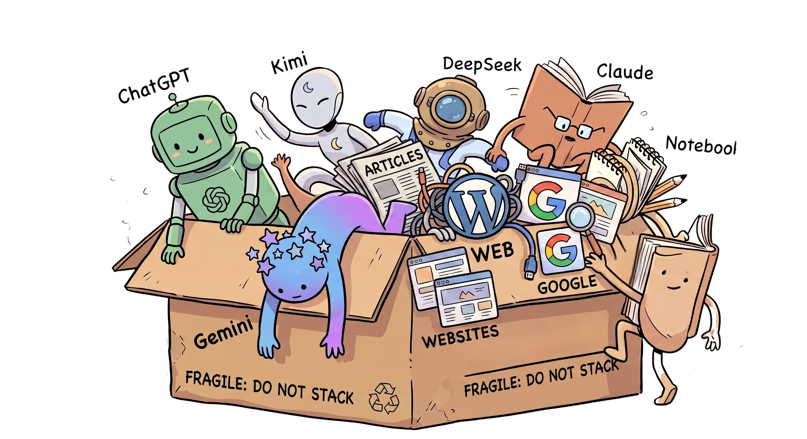

You're deciding something that matters — a raise, a pricing change, a key hire. Your best thinking is buried in AI chats and tabs you'll never open again. Misir:
Chrome extension · Free while in beta · No card needed

Everything you learn lives somewhere else — a ChatGPT thread here, a memo there, a founder's blog post you'll never find again. When it's time to decide, you can't see what you actually know, where your sources disagree, or what's still missing. Misir keeps that ledger for you.
Three quiet moves. You keep reading the way you already read.
The extension reads the page on your device, matches it to the right space, and offers one-click save — mid-article or mid-AI-chat. No folders, no tagging, no copy-paste.
Misir compares sources against each other: where they agree, where they conflict, and what none of them covered. It surfaces tensions and cross-space connections you'd never spot in a bookmarks folder.
A readiness score tells you how much of the picture you have. Knowledge gaps tell you exactly what to close before the deadline. When the ring fills, you're not guessing anymore.
The semantic matching that decides "this page belongs to that decision" runs entirely in your browser, on-device. Pages you don't save are never sent anywhere. Capture is opt-in per purpose, Global Privacy Control is honored automatically, and everything you've stored can be erased in one click.
Every space tracks its central disagreement — and which side your evidence actually supports.
A capture in one decision often answers a question in another. Misir links them.
Not "3 unread items" — but "your evidence is one-sided and your deadline is Friday."
See when you're doing the work — and when a decision has quietly gone cold.
Severity-ranked holes in your evidence, each with a concrete way to close it.
Chat with everything you've captured. Answers cite your own sources, not the open internet.
Beta spots are free · No card · Your data stays yours